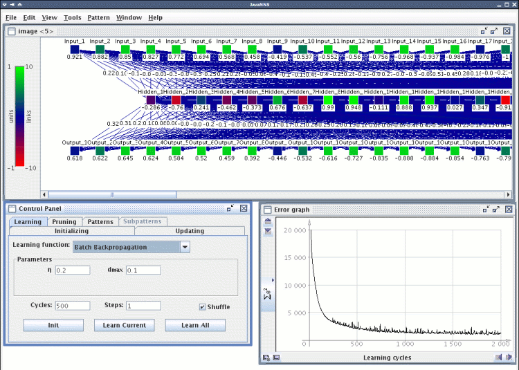
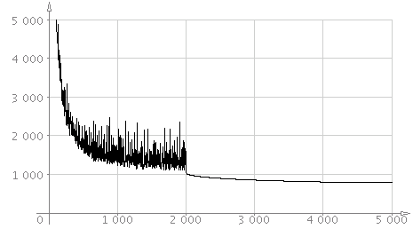
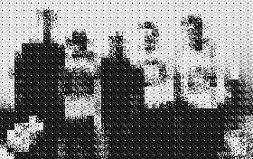

I have examined capabilities of SNNS package (Stuttgart Neural Network Simulator) and it`s interface in Python language by creating short script that was able to simulate compression of a picture with the Backpropagation method. The three layered net (64-16-64 units) learned blocks of 8x8 pixels and the image was reconstructed back and written to disk. I have investigated the image quality then.
Program SNNS disponuje kromì vlastního jádra na práci s neuronovými sítìmi (které je napsáno v jazyce C) a u¾ivatelského rozhraní (pro X Window System) také jednoduchým rozhraním v jazyce Python. Jazyk Python je objektovì orientovaný jazyk, který je pro rychlost vývoje, kterou nabízí velmi pøehledná syntaxe, mezi programátory vysoce oblíben. Díky plné podpoøe OOP je vhodný zejména na prototypování budoucích aplikací, ale jazyk sám (tedy jeho "interpret") na tom není výkonovì ¹patnì - to díky snadnému vytváøení modulù v jazyce C.
Zaujala mì jedna pøímá aplikace neuronových sítí pro kompresi obrazu. Je velmi snadná na pochopení i na implementaci, ov¹em nedosahuje ani zdaleka takových úspor a kvality, jako známìj¹í metody (JPEG a podobnì). Jako testovací obrázek jsem zvolil fotku vývojového týmu Beerfox - jak jsme ¾ertovnì nazvali slo¾ení nìkolika studentù katedry informatiky pøi jednom roèníkovém projektu. Fotografie byla pøevedena do stupòù ¹edé, ka¾dý pixel byl tedy reprezentován èíslem v intervalu <0, 255>
Komprese obrazu pomocí neuronové sítì je jednoduchá. Staèí vytvoøit sí» o n vstupních, n výstupních neuronech a m neuronech ve skryté vrstvì. Typicky se volí konfigurace 64-16-64. Obrázek se rozdìlí do èvercových blokù o velikosti 8 pixelù (vý¹ka i ¹íøka tedy musí být celoèíselnì dìlitelná 8) a získáme tak p blokù. Tìchto p blokù (vzorkù) o 64 (8 * 8) pixelech (èíslech) pak pøedkládáme síti a zvolenou metodou Backpropagation se ji sna¾íme nauèit "na identitu". To znamená, ¾e na do výstupní i vstupní vrstvy kopírujeme stejný vzorek.
Popsaná sí» má jednoduchou topologii, jako aktivaèní funkci jsem volil hyperbolometrický tangens. Proto bylo tøeba v¹echna èísla pøevést z intervalu <0, 255> do intervalu reálných èísel <-1, 1>, co¾ jsem provedl jednoduchou lineární funkcí. K dané funkci (pøímce) bylo snadné najít funkci inverzní, tedy funci pro zpìtný pøevod zpìt na hodnotu stupnì ¹edi. To jsem vyu¾il pøi finálním odeètení výsledku z výstupní vrstvy a pøevedení zpìt na obrazové body.
Jakmile chyba dosáhne urèité akceptovatelné úrovnì, staèí postupnì pøedlo¾it síti v¹echny bloky a èíst výsledky aktivaèních funkcí skryté vrstvy a zapisovat je napøíklad do souboru. Neuronù ve skryté vrstvì ale není 64, nýbr¾ 16! To je úspora 1:4. Dal¹í úspory se dosáhne kvantizací reálných èísel (napøíklad tøíbitovì nebo ètyøbitovì). Reálnì lze obrázek komprimovat asi na jednu desetinu pùvodní velikosti.
Neuronovu sí» jsem jistì mohl vytvoøit ruènì, ale vybral jsem si ponìkud slo¾itìj¹í pøíklad o 64 vstupních a výstupních a 16-ti skrytých neuronech. Proto jsem sí» vytvoøil programovì, pomocí rozhraní pro jakzyk Python, které balík SNNS nabízí. Popí¹u nyní první fázi skriptu train.py (html verze).
Nejprve je sí» inicializována.
krui.setLearnFunc('BackpropBatch')
krui.setUpdateFunc('Topological_Order')
krui.setUnitDefaults(1,0,krui.INPUT,0,1,'Act_TanH','Out_Identity')
Vidíme, ¾e je nastavena metoda dávkového zpìtného ¹íøení signálu (viz ní¾e), metoda propagace je nastavena na normální (tedy topologickou - pro na¹e úèely staèí prosté ¹íøení signálu), aktivaèní funkce je inicializována ve tøetím pøíkazu.
pos = [0,0,0] inputs = [] for i in range(1, vnejsi_vrstvy + 1) : pos[0] = i num = krui.createDefaultUnit() inputs.append(num) krui.setUnitName(num,'Input_%i' % i) krui.setUnitPosition(num, pos)
V první fázi se vytvoøí vstupní vrstva, v¹echny neurony jsou oèíslovány a pojmenovány Input_X, kde X je celé èíslo od 1 do 64. Poté je vytvoøeny skrytá vrstva o 16 neuronech Hidden_1 a¾ Hidden_16 a v¹echny jsou propojeny se v¹emi vstupními neurony. Stejným zpùsobem pak výstupní vrstva se 64 elementy.
krui.deleteAllPatterns() patset = krui.allocNewPatternSet() for block in im: for i in xrange(vnejsi_vrstvy) : krui.setUnitActivation(inputs[i], pix2real(block[i])) krui.setUnitActivation(outputs[i], pix2real(block[i])) krui.newPattern()
Nakonec jsou vytvoøeny pomocí SNNS API vzorky (konkrétní obrázek jich mìl 770) a mù¾e se pøejít k vlastnímu uèení. V¹imnìte si, ¾e jednotlivá èísla reprezentující intenzitu bodu jsou pøevedena na reální èísla pomocí funkce pix2real.
while i < pruch_1: res = krui.learnAllPatterns(0.3, 0.1)
Uèení NS je pak, jak je vidno, jednoduché. Skript po nauèení zapí¹e sí» i vzorky do souborù .net a .pat ve formátu pro program SNNS. Bylo nutné experimentovat s rùzným nastavením, co¾ se dá pohodlnì provádìt pomocí SNNS GUI, pøípadnì následovníkem JavaNNS napsaným v Jave (viz obrázek). Výsledky mìøení popí¹u ní¾e.

Volba metody má pochopitelnì na danou úlohu markantní vliv. V mém pøípadì jsem zvolil metodu Backpropagation, co¾ bylo ov¹em také zadáním úlohy. Balík SNNS nabízí hned nìkolik variant zpìtného ¹íøení signálu, av¹ak já si musel zvolit metodu Batch-Backpropagation. A to z prostého dùvodu.
Pokud bych toti¾ pou¾il jednoduchou metodu zpìtného ¹íøení (nebo jakoukoliv její vylep¹enou variantu), nikdy by se mi nepodaøilo sní¾it chybu více ne¾ o 15 procent. Proto¾e je nutné neuronovu sí» nauèit v¹em vzorkùm (tedy v¹em obrázkovým blokùm o velikosti 8x8 pixelù), není mo¾no upravovat váhy po ka¾dém kroku jednoho cyklu.
A to pøesnì metoda Backpropagation dìlá. Hned v prvních fázích uèení se chyba zastavuje na urèité hodnotì, pøes kterou se ji¾ nedostane. Øe¹ením je pou¾ití dávkového zpìtného ¹íøení signálu (Batch-Backpropagation). Vzorec pro výpoèet nových vah se vùbec neli¹í, rozdíl je pouze v tom, kdy dojde k vlastní úpravì synaptických vah. Pøi obyèejné metodì k tomu dochází v ka¾dém kroku jednoho cyklu, u dávkové verze a¾ na konci cyklu. Následující obrázek ilustruje chybu pøi uèení u metody Batch-Backpropagation.

Èernou barvou je zaznamenán prùbìh s koeficientem uèení 0,5; modøe je koeficient 2,5 a èervenou pak koeficient 0,01. Je patrné, ¾e pøi vysokém koeficientu uèení jsou odchylky vy¹¹í a chyba se sni¾uje velmi rychle. Pøi nízkém koeficientu je pak køívka hladká a chyba se sni¾uje pomalu. Uèení s vysokým koeficientem má tedy v závìru urèitou rezervu - sí» se není schopna nauèit "do detailu".
Ideální by tedy bylo koeficient heuristicky mìnit. Nejlep¹ích výsledkù jsem dosahoval s kombinací koeficientù 0,3 a 0,03. S prvním koeficientem jsem uèení zahájil (2000 cyklù), s druhým pak "doladil" (1500 cyklù). Výsledný graf je následující.

Podaøilo se mi sní¾it chybu témìø na setinu pùvodní (náhodnì inicializované) sítì, co¾ by mìlo být dost na to, aby bylo mo¾no po pøevodu reálných èísel zpìt do intervalu <0, 255> obrázek zrekonstruovat natolik, aby bylo patrné, co na nìm je.
Skript naète obrázek ve formátu SGI RGB (aby nebyly vy¾adovány ¾ádné závislosti), zpracuje a výsledek ulo¾í zpìt do stejného formátu (ve stupních ¹edi). Tento formát naète napøíklad program GIMP nebo utilita display z balíku ImageMagick.
Srovnejme tedy pùvodní obrázek
s výsledkem po 35 krocích,

po 350 krocích
a koneènì po 3500 krocích.

Dal¹í prodlu¾ování uèení nemìlo na kvalitu obrázku praktický vliv a køivka chyby zùstávala na urèité hodnotì. Zajímavé bylo, ¾e pøi dané konfiguraci sí» nemìla ¾ádné tendence k pøeuèení.
Jak vidíme, tato metoda nemá praktického vyu¾ití. Komprese je sice dostaèující, ale kvalita výsledného obrázku je velmi nízká. Také doba komprese je prakticky neúnosná (3500 krokù cca 30 vteøin na procesoru Pentium-M 1,4 Ghz). Jediné, co by se dalo vyzdvihnout je doba dekomprese, která je pomìrnì rychlá.